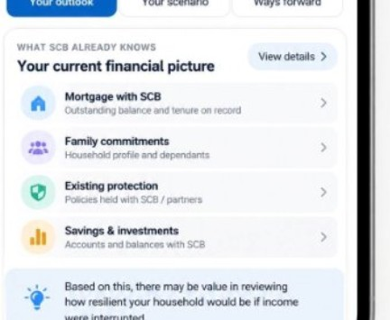
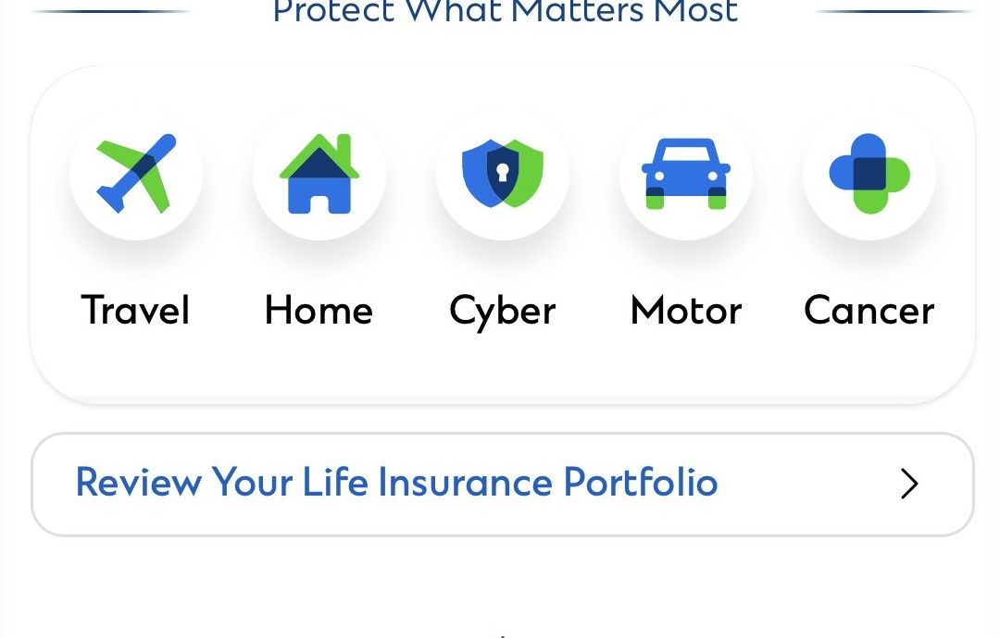

<!doctype html>
<html lang="en">
  <head>
    <meta charset="utf-8" />
    <meta name="viewport" content="width=device-width, initial-scale=1" />
    <meta name="description" content="SC Mobile needs-intelligence demonstrator using synthetic data." />
    <link rel="icon" href="data:," />
    <title>SCB | Protection Insights Prototype</title>
    <link rel="stylesheet" href="styles.css" />
  </head>
  <body>
    <aside class="demo-bar" aria-label="Prototype controls">
      <nav aria-label="Demo personas">
        <a href="?persona=simon" data-persona="simon" aria-describedby="persona-popover" aria-expanded="false">Simon · Retirement</a>
        <a href="?persona=alex" data-persona="alex" aria-describedby="persona-popover" aria-expanded="false">Alex · Protection</a>
        <a href="?persona=sarah" data-persona="sarah" aria-describedby="persona-popover" aria-expanded="false">Sarah · Family</a>
      </nav>
      <div class="demo-guides" role="group" aria-label="Presenter guides">
      <div class="moment-explainer">
        <button class="moment-trigger" type="button" aria-label="See how the client intelligence journey works" aria-controls="moment-callout" aria-expanded="false">How the journey works</button>
        <aside id="moment-callout" class="moment-callout" role="note" aria-hidden="true">
          <strong>From data to a useful conversation</strong>
          <p class="journey-logic-intro">The deck's strategy, shown through this illustrative customer journey.</p>
          <ol class="journey-logic">
            <li><span class="logic-step">01</span><div><b>Build the client picture</b><small>Bring together bank-held, partner and customer-shared information; make gaps visible.</small><em>In the demo: financial picture</em></div></li>
            <li><span class="logic-step">02</span><div><b>Anticipate a possible need</b><small>Use a life event or financial signal to raise a relevant question before a product.</small><em>In the demo: three illustrative moments</em></div></li>
            <li><span class="logic-step">03</span><div><b>Choose the right response</b><small>Let the customer validate or correct the need, then explore, defer or decline.</small><em>In the demo: customer validation</em></div></li>
            <li><span class="logic-step">04</span><div><b>Start the right conversation</b><small>Offer a useful digital next step or a conversation with an adviser.</small><em>In the demo: options and adviser handoff</em></div></li>
            <li class="logic-future"><span class="logic-step">05</span><div><b>Learn from outcomes</b><small>Use corrections and eventual outcomes to improve future relevance.</small><em>Future state: this prototype keeps responses in-session; it has no learning loop.</em></div></li>
          </ol>
          <small class="logic-footnote">Personas and calculations are illustrative. A modelled need remains a hypothesis until the customer validates it.</small>
        </aside>
      </div>
      <div class="next-steps-explainer">
        <details class="next-steps-details">
          <summary class="moment-trigger" aria-label="Open the next steps discussion guide">What&apos;s needed next?</summary>
          <button class="next-guide-backdrop" type="button" tabindex="-1" data-close-next-guide aria-label="Close data readiness guide"></button>
          <aside class="moment-callout next-steps-callout" role="dialog" aria-modal="true" aria-labelledby="next-guide-title">
            <div class="next-guide-heading"><div><span class="next-guide-kicker">CAPCO &middot; INTERNAL WORKING HYPOTHESIS &middot; V1.2</span><h2 id="next-guide-title">What&apos;s needed next?</h2></div><button class="next-guide-close" type="button" data-close-next-guide aria-label="Close discussion guide">&times;</button></div>
            <p class="next-guide-northstar">What would help customers understand their protection picture and make a more informed next decision?</p><p class="next-guide-intro">Understand the context <span>&rarr;</span> shape a useful first step <span>&rarr;</span> build trust into the experience</p>
            <section class="next-guide-section" id="next-data" aria-labelledby="next-data-title">
              <div class="next-section-heading"><span class="next-section-number">01</span><div><span class="next-section-kicker">UNDERSTAND THE CUSTOMER CONTEXT</span><h3 id="next-data-title">What could help create a trusted customer picture?</h3></div></div><p class="context-support">Start with what SCB already understands, make uncertainty visible, and invite the customer to complete or correct the picture where needed.</p>
              <div class="data-role-grid">
                <article><span>WHAT SCB ALREADY KNOWS</span><p>Bank-held customer and product information</p></article>
                <article><span>WHAT MAY BE SIGNALLED</span><p>Potential indicators to explore, not facts to assume</p></article>
                <article><span>WHAT THE CUSTOMER SHARES</span><p>Goals, dependants, priorities, plans and external cover</p></article>
                <article><span>WHAT THE CUSTOMER CONFIRMS</span><p>Information reviewed, corrected or explicitly confirmed</p></article>
                <article class="data-role-external"><span>WHAT THE ECOSYSTEM CAN ADD <small>Potential ecosystem enrichment &middot; e.g. SGFinDex</small></span><p>Insurer / partner data and customer-provided documents, where they add genuine customer value and are permitted</p><details class="sgfin-details"><summary>Questions for the bancassurance opportunity</summary><ul><li>Which customer moments should surface a protection insight&mdash;and when should we stay silent?</li><li>How could an insight become a qualified, adviser-ready conversation through digital and relationship channels?</li><li>What makes a lead genuinely customer-led: a signal, customer confirmation, expressed intent or adviser assessment?</li><li>How large could the opportunity be across eligible customers, actionable insights, adviser capacity and likely conversion?</li><li>How will we measure incremental value in suitable policies, premium and persistency against today&apos;s baseline?</li><li>What data, consent and operating capacity would we need to test this with customers now?</li></ul><small>An important design question:</small><strong>Access to data does not automatically mean permission for every downstream use.</strong></details></article>
                <article><span>WHAT THE EXPERIENCE CALCULATES</span><p>Illustrative outputs from defined inputs and assumptions</p></article>
                <article><span>WHAT AI CAN HELP EXPLAIN</span><p>Governed information in plain English; the customer makes the decision</p></article>
              </div>
              <p class="customer-control-principle">The customer should always be able to understand where information came from, correct it where appropriate, and decide what happens next.</p><div class="next-data-question"><p>Together with SCB, understand what can credibly support this experience.</p><small>Source &middot; Ownership &middot; Quality &middot; Freshness &middot; Permission &middot; Provenance</small></div>
              <details class="guide-disclosure data-hypotheses"><summary>Explore working data hypotheses</summary>
                <p class="hypotheses-intro">These are working assumptions to help structure the discussion &mdash; not confirmed SCB architecture.</p>
<div class="hypothesis-list"><section class="hypothesis-cluster"><h4>CUSTOMER &amp; HOUSEHOLD</h4><details><summary><b>Customer identity / profile</b><span><em class="hypothesis-type">SCB KNOWS</em> Likely SCB customer master / CRM / KYC <i>TO VALIDATE</i></span></summary><dl><dt>Source</dt><dd>Likely SCB customer master / CRM / KYC &mdash; TO VALIDATE</dd><dt>Owner</dt><dd>TO VALIDATE</dd><dt>Quality / freshness</dt><dd>Validate system of record, match quality and last-updated date</dd><dt>Permission</dt><dd>TO VALIDATE</dd><dt>Provenance</dt><dd>Record source and timestamp &mdash; TO VALIDATE</dd></dl></details><details><summary><b>Dependants / household</b><span><em class="hypothesis-type">SCB KNOWS / CUSTOMER TELLS</em> SCB where available; otherwise customer-declared <i>TO VALIDATE</i></span></summary><dl><dt>Source</dt><dd>SCB where available; otherwise customer-declared &mdash; TO VALIDATE</dd><dt>Owner</dt><dd>TO VALIDATE</dd><dt>Quality / freshness</dt><dd>Ask customer to review household links</dd><dt>Permission</dt><dd>TO VALIDATE</dd><dt>Provenance</dt><dd>Distinguish bank-held from declared context</dd></dl></details><details><summary><b>Family commitments</b><span><em class="hypothesis-type">CUSTOMER TELLS / INFERRED</em> Customer-declared; inference only where appropriate</span></summary><dl><dt>Source</dt><dd>Customer-declared; possible inference only where appropriate</dd><dt>Owner</dt><dd>TO VALIDATE</dd><dt>Quality / freshness</dt><dd>Customer review needed</dd><dt>Permission</dt><dd>TO VALIDATE</dd><dt>Provenance</dt><dd>Mark declared or inferred</dd></dl></details><details><summary><b>Education / life goals</b><span><em class="hypothesis-type">CUSTOMER TELLS / TO VALIDATE</em> Customer-shared; potential adviser / planning data <i>TO VALIDATE</i></span></summary><dl><dt>Source</dt><dd>Customer-shared; potential adviser / planning data &mdash; TO VALIDATE</dd><dt>Owner</dt><dd>TO VALIDATE</dd><dt>Quality / freshness</dt><dd>Confirm with customer</dd><dt>Permission</dt><dd>TO VALIDATE</dd><dt>Provenance</dt><dd>Source and date to be visible</dd></dl></details><details><summary><b>Retirement horizon</b><span><em class="hypothesis-type">CUSTOMER TELLS / TO VALIDATE</em> Customer-shared; potential wealth-planning data <i>TO VALIDATE</i></span></summary><dl><dt>Source</dt><dd>Customer-shared; potential wealth-planning data &mdash; TO VALIDATE</dd><dt>Owner</dt><dd>TO VALIDATE</dd><dt>Quality / freshness</dt><dd>Confirm with customer</dd><dt>Permission</dt><dd>TO VALIDATE</dd><dt>Provenance</dt><dd>Source and date to be visible</dd></dl></details></section><section class="hypothesis-cluster"><h4>MONEY &amp; PROTECTION</h4><details><summary><b>Mortgage / lending</b><span><em class="hypothesis-type">SCB KNOWS / EXTERNAL</em> Likely SCB lending data; possible external enrichment <i>TO VALIDATE</i></span></summary><dl><dt>Source</dt><dd>Likely SCB lending data; possible external enrichment &mdash; TO VALIDATE</dd><dt>Owner</dt><dd>TO VALIDATE</dd><dt>Quality / freshness</dt><dd>Validate reusable fields and freshness</dd><dt>Permission</dt><dd>Validate purposes and permissions</dd><dt>Provenance</dt><dd>Label SCB-held versus external fields</dd></dl></details><details><summary><b>Savings / deposits</b><span><em class="hypothesis-type">SCB KNOWS / EXTERNAL</em> SCB account data; potential SGFinDex enrichment <i>TO VALIDATE</i></span></summary><dl><dt>Source</dt><dd>SCB account data; potential SGFinDex enrichment &mdash; TO VALIDATE</dd><dt>Owner</dt><dd>TO VALIDATE</dd><dt>Quality / freshness</dt><dd>Validate balance meaning and freshness</dd><dt>Permission</dt><dd>TO VALIDATE</dd><dt>Provenance</dt><dd>Source and retrieval date &mdash; TO VALIDATE</dd></dl></details><details><summary><b>Investments / wealth</b><span><em class="hypothesis-type">SCB KNOWS / EXTERNAL</em> SCB wealth systems; potential SGFinDex / ecosystem data <i>TO VALIDATE</i></span></summary><dl><dt>Source</dt><dd>SCB wealth systems; potential SGFinDex / ecosystem data &mdash; TO VALIDATE</dd><dt>Owner</dt><dd>TO VALIDATE</dd><dt>Quality / freshness</dt><dd>Validate valuation basis and freshness</dd><dt>Permission</dt><dd>TO VALIDATE</dd><dt>Provenance</dt><dd>Source and retrieval date &mdash; TO VALIDATE</dd></dl></details><details><summary><b>Existing SCB-visible insurance</b><span><em class="hypothesis-type">SCB KNOWS</em> SCB / insurer-partner records <i>TO VALIDATE</i></span></summary><dl><dt>Source</dt><dd>SCB / insurer-partner records &mdash; TO VALIDATE</dd><dt>Owner</dt><dd>TO VALIDATE</dd><dt>Quality / freshness</dt><dd>Validate policyholder / insured links, key fields and record date</dd><dt>Permission</dt><dd>TO VALIDATE</dd><dt>Provenance</dt><dd>Record provider and last-updated date</dd></dl></details><details><summary><b>Income / financial capacity</b><span><em class="hypothesis-type">SCB KNOWS / EXTERNAL</em> SCB banking data; potential permitted external data <i>TO VALIDATE</i></span></summary><dl><dt>Source</dt><dd>SCB banking data; potential permitted external data &mdash; TO VALIDATE</dd><dt>Owner</dt><dd>TO VALIDATE</dd><dt>Quality / freshness</dt><dd>Validate calculation and freshness</dd><dt>Permission</dt><dd>TO VALIDATE</dd><dt>Provenance</dt><dd>Label source and derived values</dd></dl></details></section><section class="hypothesis-cluster"><h4>EXTERNAL &amp; CONTEXTUAL INFORMATION</h4><details><summary><b>External insurance</b><span><em class="hypothesis-type">EXTERNAL / CUSTOMER TELLS / CUSTOMER CONFIRMS</em> SGFinDex, upload, declaration or possible insurer feed <i>TO VALIDATE</i></span></summary><dl><dt>Source</dt><dd>SGFinDex / customer upload / customer declaration / possible insurer feeds &mdash; TO VALIDATE</dd><dt>Owner</dt><dd>TO VALIDATE</dd><dt>Quality / freshness</dt><dd>Customer and source checks required</dd><dt>Permission</dt><dd>Consent, purpose and retention to validate</dd><dt>Provenance</dt><dd>Keep source and confirmation status visible</dd></dl></details><details><summary><b>Uploaded policy</b><span><em class="hypothesis-type">CUSTOMER TELLS &rarr; CUSTOMER CONFIRMS</em> Customer-uploaded PDF / image &rarr; customer confirms</span></summary><dl><dt>Source</dt><dd>Customer-uploaded PDF / image</dd><dt>Owner</dt><dd>Customer supplies; processing owner TO VALIDATE</dd><dt>Quality / freshness</dt><dd>Extracted details need customer confirmation</dd><dt>Permission</dt><dd>Upload purpose and retention to validate</dd><dt>Provenance</dt><dd>Mark customer supplied and customer confirmed separately</dd></dl></details><details><summary><b>SGFinDex / ecosystem enrichment</b><span><em class="hypothesis-type">EXTERNAL / PERMITTED USE TO EXPLORE</em> Potential permitted enrichment; current use not confirmed <i>TO VALIDATE</i></span></summary><dl><dt>Source</dt><dd>Explore what information is already available and how it is retrieved &mdash; TO VALIDATE</dd><dt>Owner</dt><dd>TO VALIDATE</dd><dt>Quality / freshness</dt><dd>Relevance and freshness for this use &mdash; TO VALIDATE</dd><dt>Permission</dt><dd>Consent and permitted downstream use &mdash; TO VALIDATE</dd><dt>Provenance</dt><dd>Explore how to communicate source and retrieval date</dd></dl></details><details><summary><b>External insurer payment signals</b><span><em class="hypothesis-type">INFERRED ONLY</em> Transaction pattern; inference only, never proof of active cover</span></summary><dl><dt>Source</dt><dd>Transaction pattern &mdash; TO VALIDATE</dd><dt>Owner</dt><dd>TO VALIDATE</dd><dt>Quality / freshness</dt><dd>Signal may be ambiguous</dd><dt>Permission</dt><dd>TO VALIDATE</dd><dt>Provenance</dt><dd>Keep explicitly labelled as inference; not proof of active cover</dd></dl></details><details><summary><b>Travel / overseas activity</b><span><em class="hypothesis-type">INFERRED ONLY</em> Possible signal only; sensitive from an experience / privacy perspective</span></summary><dl><dt>Source</dt><dd>Possible signal only &mdash; TO VALIDATE whether it should be used at all</dd><dt>Owner</dt><dd>TO VALIDATE</dd><dt>Quality / freshness</dt><dd>Not a fact about residence, intent or need</dd><dt>Permission</dt><dd>Privacy and experience review required</dd><dt>Provenance</dt><dd>Must remain clearly labelled as a signal</dd></dl></details></section><section class="hypothesis-cluster"><h4>DERIVED EXPERIENCE</h4><details><summary><b>Potential protection moment</b><span><em class="hypothesis-type">INFERRED</em> Rules / analytics; inferred</span></summary><dl><dt>Source</dt><dd>Rules / analytics</dd><dt>Owner</dt><dd>TO VALIDATE</dd><dt>Quality / freshness</dt><dd>Validate assumptions and outputs</dd><dt>Permission</dt><dd>TO VALIDATE</dd><dt>Provenance</dt><dd>Show as a hypothesis, never a confirmed fact</dd></dl></details><details><summary><b>Scenario output</b><span><em class="hypothesis-type">SYSTEM CALCULATES</em> Deterministic calculation</span></summary><dl><dt>Source</dt><dd>Deterministic calculation</dd><dt>Owner</dt><dd>TO VALIDATE</dd><dt>Quality / freshness</dt><dd>Validate formula, inputs and calculation version</dd><dt>Permission</dt><dd>TO VALIDATE</dd><dt>Provenance</dt><dd>Show inputs and calculation basis</dd></dl></details><details><summary><b>Policy interpretation</b><span><em class="hypothesis-type">AI EXPLAINS / RULES VALIDATE</em> Document intelligence + rules + GenAI explanation</span></summary><dl><dt>Source</dt><dd>Document intelligence + rules + GenAI explanation</dd><dt>Owner</dt><dd>TO VALIDATE</dd><dt>Quality / freshness</dt><dd>Explain why information surfaced, summarise relevant wording, and distinguish what appears clear or uncertain; customer confirms extracted details</dd><dt>Permission</dt><dd>Upload and processing permissions TO VALIDATE</dd><dt>Provenance</dt><dd>Keep document, extracted fields and confirmation distinct; support a useful next question, not an AI decision</dd></dl></details><details><summary><b>Adviser / suitability handoff</b><span><em class="hypothesis-type">HUMAN-GOVERNED</em> Governed adviser / suitability process &mdash; not an AI determination</span></summary><dl><dt>Source</dt><dd>Governed adviser / suitability process</dd><dt>Owner</dt><dd>TO VALIDATE</dd><dt>Quality / freshness</dt><dd>Human judgement and required controls</dd><dt>Permission</dt><dd>TO VALIDATE</dd><dt>Provenance</dt><dd>AI does not determine suitability</dd></dl></details></section></div>
              </details>
            </section>

            <section class="next-guide-section" id="next-increment" aria-labelledby="next-increment-title">
              <div class="next-section-heading"><span class="next-section-number">02</span><div><span class="next-section-kicker">SHAPE THE FIRST INCREMENT TOGETHER</span><h3 id="next-increment-title">Where could we start together?</h3></div></div>
              <p class="increment-support">Start small enough to learn, but useful enough for customers and advisers to see value.</p><p class="illustrative-label">ILLUSTRATIVE OPTIONS &mdash; neither is agreed</p>
              <div class="increment-options">
                <article class="increment-option"><span class="option-letter">A</span><span class="option-kicker">ILLUSTRATIVE OPTION</span><h4>TRUSTED PROTECTION VIEW</h4><p class="option-experience">See what is currently visible to SCB, what is not visible, and what may be worth reviewing.</p><p class="option-purpose">Understand whether customers find the picture clear, credible and useful.</p><p class="option-benefit">Build first from information SCB already trusts where possible.</p><figure><figcaption>Start with what is already understood</figcaption></figure></article>
                <article class="increment-option"><span class="option-letter">B</span><span class="option-kicker">ILLUSTRATIVE OPTION</span><h4>HELP THE CUSTOMER COMPLETE THE PICTURE</h4><div class="customer-quote">&ldquo;I already have cover&rdquo;</div><div class="option-steps"><span>Upload / add information</span><i>&rarr;</i><span>Extract relevant details</span><i>&rarr;</i><span>Customer reviews</span><i>&rarr;</i><span>Customer confirms</span><i>&rarr;</i><span>Explore a useful question</span></div><blockquote>&ldquo;Does this cover still work if my family needs it overseas?&rdquo;</blockquote><p class="option-purpose">Explore whether customer-provided information can make the portfolio picture more complete and useful.</p><div class="option-evidence"><figure><figcaption>See protection areas in the current experience</figcaption></figure><figure><figcaption>Invite the customer to complete the picture</figcaption></figure></div></article>
              </div>
              <p class="proof-question">Which starting point would create the most useful conversation with SCB?</p>
              <details class="guide-disclosure measure-disclosure"><summary>What would we want to learn?</summary><div class="measure-cards"><p><b>CUSTOMER UNDERSTANDING</b><span>Can customers understand what they are seeing and why?</span></p><p><b>DATA CONFIDENCE</b><span>Is the information reliable enough to support the experience?</span></p><p><b>CUSTOMER VALUE</b><span>Does the experience help create a better next conversation?</span></p><p><b>SERVICE VALUE</b><span>Can an adviser continue with better context?</span></p></div></details>
            </section>

            <section class="next-guide-section" id="next-guardrails" aria-labelledby="next-guardrails-title">
              <div class="next-section-heading"><span class="next-section-number">03</span><div><span class="next-section-kicker">AGREE THE TRUST BOUNDARIES</span><h3 id="next-guardrails-title">Design for trust from the start</h3><p class="trust-prompt">What should always remain true?</p></div></div>
              <div class="guardrail-grid"><p>NOT VISIBLE <span>&ne;</span> NOT COVERED</p><p>INFERRED <span>&ne;</span> CONFIRMED</p><p>CUSTOMER-CONFIRMED <span>&ne;</span> BANK-HELD</p><p>AI EXPLAINS <span>&middot;</span> HUMAN JUDGEMENT REMAINS</p></div>
              <p class="need-first">Need first. Product later.</p>
              <details class="guide-disclosure guardrail-disclosure"><summary>Explore trust questions</summary><ul><li>What can we surface proactively without feeling intrusive?</li><li>When should we ask the customer rather than infer?</li><li>Where should explicit consent be part of the experience?</li><li>What information should customers be able to correct?</li><li>When should an adviser or insurer confirm the interpretation?</li><li>What should never be automated?</li><li>How do we make the source of information understandable?</li></ul></details>
            </section>
            <p class="final-discussion-question">What can we build together using what SCB already has &mdash; and learn from customers before scaling further?</p>
          </aside>
        </details>
      </div>
      </div>
    </aside>
    <div id="persona-popover" class="persona-popover" role="tooltip" aria-hidden="true"></div>
    <main class="stage">
      <section class="phone" aria-label="SC Mobile prototype">
        <div id="app" class="app" aria-live="polite"></div>
      </section>
    </main>
    <footer class="demo-footer" aria-label="Prototype controls">
      <a class="demo-presenter-link" href="presentation.html">Present the proposition</a>
      <button class="demo-reset" type="button" aria-label="Reset demo to the selected persona's starting screen">Reset demo</button>
    </footer>
    <script src="../version-selector.js" defer></script>
    <script src="app.js"></script>
  </body>
</html>
